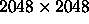

We use a 20-inch Photometric Telescope, located next to the 2.5-meter telescope's enclosure, to measure nightly extinctions and to observe transfer fields (secondary patches) that in turn are used to calibrate the 2.5-meter imaging data. Details of the full photometric calibration process can be found in § 4.5. This telescope is a commercial reflector built by DFM Engineering (Longmont, Colorado), modified to incorporate improved baffling and a coma corrector to increase its field of view. It is equipped with a thinned SITe  chip with 24 micron square pixels like the u chips in the 2.5m camera, and a set of filters nominally the same as those in the camera. Please refer to § 3.2.1.
The telescope operates automatically, observing primary standard stars and secondary patch transfer fields selected from an on-line database. Observing staff can monitor progress with real-time tools that display cloud cover, extinction coefficients, and observing progress hogg01.